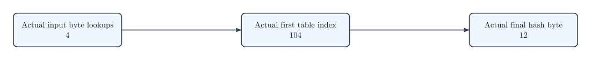
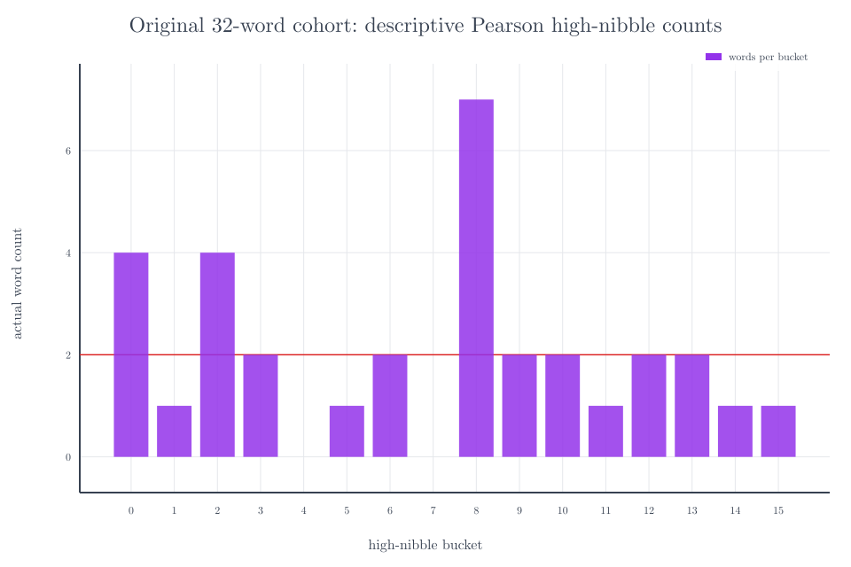
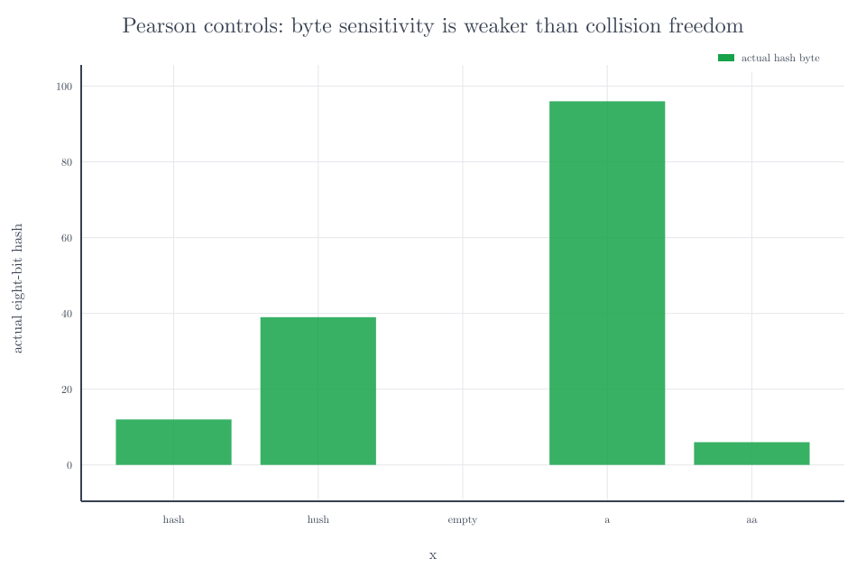
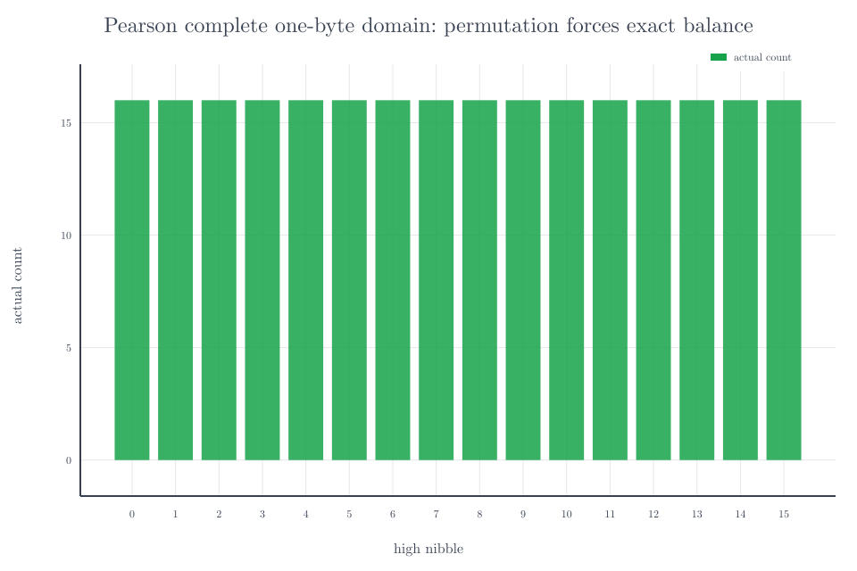

Pearson hashing: actual byte lookup states
Abstract
From accumulator zero, each byte performs h=T[h XOR byte] using a complete permutation of all256 byte values. A fixed-position single-byte substitution in equal-length messages must change the result, because every subsequent fixed-byte transition is bijective. Multiple-byte edits and different-length strings can collide, and there are only256 possible outputs. The original32-word cohort is descriptive, not a randomness or cryptographic-quality test. No external dataset is needed.
Mechanism and scope
From accumulator zero, each byte performs h=T[h XOR byte] using a complete permutation of all256 byte values. A fixed-position single-byte substitution in equal-length messages must change the result, because every subsequent fixed-byte transition is bijective. Multiple-byte edits and different-length strings can collide, and there are only256 possible outputs. The original32-word cohort is descriptive, not a randomness or cryptographic-quality test. No external dataset is needed.
A tiny actual producing history
The table and native diagram use the same producing run. Captured records own their values; the report does not reconstruct the algorithm.
#include <dm/dm.hpp>
int main() {
std::filesystem::create_directories("build");
auto t = dm::algorithms::pearson_hash_trace("hash");
std::print("| position | byte | before | XOR index | actual lookup result |\n| ---: | ---: | ---: | " "---: | ---: |\n");
for (auto &r : t.steps)
std::print("| {} | {} | {} | {} | {} |\n", r.index, int(r.byte),
int(r.before), int(r.table_index), int(r.after));
dm::graphics::Diagram d;
d.node("n0", {0, 0},
std::format("Actual input byte lookups\n{}", t.steps.size()));
d.node("n1", {8, 0},
std::format("Actual first table index\n{}",
int(t.steps.front().table_index)));
d.node("n2", {16, 0}, std::format("Actual final hash byte\n{}", int(t.hash)));
d.edge("n0", "n1").edge("n1", "n2");
d.save_svg("build/pearson_tiny.svg");
}| position | byte | before | XOR index | actual lookup result |
|---|---|---|---|---|
| 0 | 104 | 0 | 104 | 51 |
| 1 | 97 | 51 | 82 | 29 |
| 2 | 115 | 29 | 110 | 215 |
| 3 | 104 | 215 | 191 | 12 |

The original fixture, retained
This complete program retains the original inputs, seed and substantive experiment. Any added display prefix is explicitly separate from the original random call schedule.
#include <dm/dm.hpp>
using namespace datamunge::algorithms;
using namespace datamunge::graphics;
int main() {
std::ostringstream original_output;
auto *original_cout = std::cout.rdbuf(original_output.rdbuf());
std::filesystem::create_directories("build");
const std::vector<std::string> words = {"the", "quick", "brown", "fox",
"jumps", "over", "lazy", "dog",
"hash", "table", "algorithm",
"data", "structure", "vector",
"matrix", "graph", "tree", "heap",
"queue", "stack", "alpha", "beta",
"gamma", "delta", "one", "two",
"three", "four", "five", "six",
"seven", "eight"};
std::cout << "=== Pearson hashing (8-bit) ===\n";
std::cout << "hash(\"hash\") = " <<
static_cast<int>(pearson_hash("hash")) << '\n';
std::cout << "hash(\"hush\") = " <<
static_cast<int>(pearson_hash("hush")) <<
" (one-byte change flips it)\n\n";
std::vector<double> buckets(16, 0.0);
for (const auto &w : words)
buckets[pearson_hash(w) / 16] += 1.0; // high nibble bucket
std::cout << words.size() <<
" words into 16 buckets (by high nibble of the 8-bit hash):\n ";
for (double b : buckets)
std::cout << static_cast<int>(b) << ' ';
std::cout << "\n(ideal ~" << double(words.size()) / 16.0 <<
" per bucket)\n";
std::vector<std::string> labels;
for (int i = 0; i < 16; ++i)
labels.push_back(std::to_string(i));
RPlot p =
RPlot::barplot(buckets, labels, "words per bucket", {147, 51, 234});
p.abline_h(double(words.size()) / 16.0, {220, 38, 38}, 1.5);
p.title("Original 32-word cohort: descriptive Pearson high-nibble counts").x_label("high-nibble bucket").y_label("actual word count");
p.save_svg("build/pearson_original.svg");
std::cout << "\nwrote build/pearson_original.svg\n";
std::cout.rdbuf(original_cout);
std::print("| Original computed output |\n| --- |\n");
std::istringstream lines(original_output.str());
std::string line;
while (std::getline(lines, line)) {
while (!line.empty() && line.back() == ' ') line.pop_back();
if (!line.empty()) std::print("| `{}` |\n", line);
}
return 0;
}| Original computed output |
|---|
=== Pearson hashing (8-bit) === |
hash("hash") = 12 |
hash("hush") = 39 (one-byte change flips it) |
32 words into 16 buckets (by high nibble of the 8-bit hash): |
4 1 4 2 0 1 2 0 7 2 2 1 2 2 1 1 |
(ideal ~2 per bucket) |
wrote build/pearson_original.svg |

Controls and boundary cases
#include <dm/dm.hpp>
int main() {
std::filesystem::create_directories("build");
std::vector<double> v;
std::vector<std::string> labels;
std::print("| bytes | 8-bit hash | native 2-byte extension |\n| --- | ---: | ---: |\n");
for (const std::string word : {"hash", "hush", "", "a", "aa"}) {
auto h = dm::algorithms::pearson_hash(word);
v.push_back(h);
labels.push_back(word.empty() ? "empty" : word);
std::print("| {} | {} | {} |\n", labels.back(), int(h),
dm::algorithms::pearson_hash_wide(word, 2));
}
auto p = dm::graphics::RPlot::barplot(v, labels, "actual hash byte");
p.title("Pearson controls: byte sensitivity is weaker than collision freedom").y_label("actual eight-bit hash");
p.save_svg("build/pearson_controls.svg");
}| bytes | 8-bit hash | native 2-byte extension |
|---|---|---|
| hash | 12 | 3268 |
| hush | 39 | 10189 |
| empty | 0 | 0 |
| a | 96 | 24786 |
| aa | 6 | 1619 |

Producing work and finite observations
#include <dm/dm.hpp>
int main() {
std::filesystem::create_directories("build");
std::vector<double> v(16, 0);
for (int i = 0; i < 256; ++i) {
std::string d(1, static_cast<char>(i));
++v[dm::algorithms::pearson_hash(d) / 16];
}
std::vector<std::string> labels;
for (int i = 0; i < 16; ++i)
labels.push_back(std::to_string(i));
std::print("All256 one-byte inputs, actual high-nibble counts: `{}`.\n", v);
auto p = dm::graphics::RPlot::barplot(v, labels, "actual count");
p.title("Pearson complete one-byte domain: permutation forces exact balance").x_label("high nibble").y_label("actual count");
p.save_svg("build/pearson_work.svg");
}All256 one-byte inputs, actual high-nibble counts: [16, 16, 16, 16, 16, 16, 16, 16, 16, 16, 16, 16, 16, 16, 16, 16].

API and interpretation
All four blocks are complete editable C++ programs. Numerical tables retain raw native values; figures display only those returned records. Trace limits count documented logical records or scalar entries, not peak bytes or wall-clock work. Validation is complete before unchecked indexing; captured histories are educational owned storage. A returned result is interpreted under the algorithm-specific scope above, without a universal optimality, convergence or statistical-quality claim.
Pearson gives lookup-based byte hashing. The native fixed table and wider first-byte-offset extension are documented separately.
Verification
This ten-report batch passes 89 CTest cases, 20 ASan/UBSan cases with all ten
producing families directly instrumented, 62 compiled and executed public
examples, 200/200 scoped file definitions plus 15/15 exact PCG class
definitions, and ten representative clangd hovers. Independent Python
hashlib/HMAC and arbitrary-integer PCG checks verify 75189 records with 123243
checks. Native independent per-pixel visibility, exhaustive prefix reversals,
quadratic LIS, integer perceptron updates, sampled-label tail counts and
exhaustive Boolean-cover checks supplement frozen valid-input comparisons for
all ten producers. Ten checkout and ten byte-identical installed development
headers compile independently; an installed-header native consumer links and
runs. All 40 complete programs execute; all 40 native figures have been visually
reviewed. HTML/Markdown exports preserve computed result rows and identical
image bytes. These are scoped native checks. Receipts:
build/mepml-conversion/batch-274-283/.